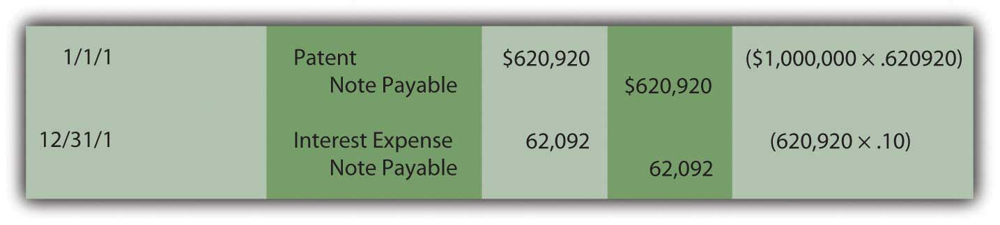
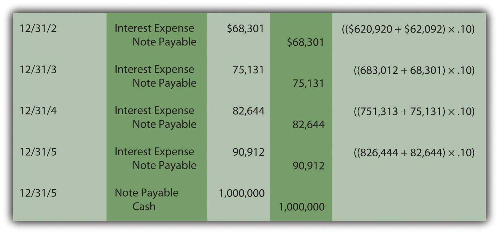
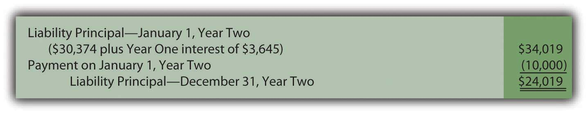
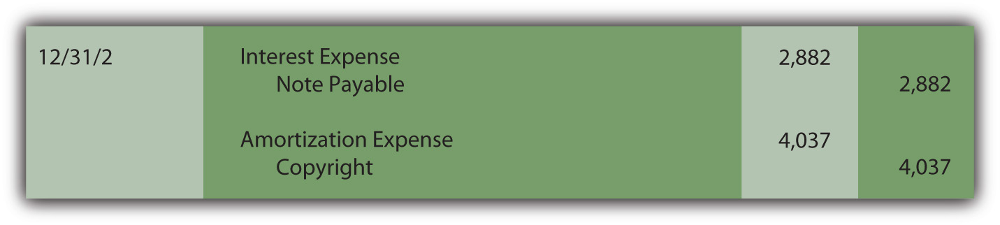

At the end of this section, students should be able to meet the following objectives:
Question: A company buys a patent from an inventor on January 1, Year One, for $1 million to be paid immediately. The accounting is straightforward; the patent is recognized as an intangible asset and reported at the historical cost of $1 million. Accounting rules are clear on the handling of such acquisitions.
Assume, instead, that the company offers to pay this $1 million but not until five years have passed. The seller agrees to that proposal. The purchase is made now but payment is delayed. Is the $1 million still being paid solely for the patent? Does the entire $1 million reflect the historical cost of this intangible? What reporting is appropriate if an asset such as a patent, building, or land is bought but payment will not take place for several years? How is historical cost determined?
Answer: Approximately forty years ago, the authoritative accounting body at the time ruled that when cash is paid for a purchaseSimilar rules apply when an asset is sold and the money is to be collected over a period of future years. For convenience, the illustrations in this chapter will focus on cash payments made in an acquisition. over an extended period of time in the future, there are always two distinct reasons for the payments.The Accounting Principles Board (APB) was the primary group in charge of creating U.S. GAAP from 1962 until 1973 when it was replaced by the Financial Accounting Standards Board (FASB). During those years, the APB produced thirty-one opinions. Its Opinion 21, “Interest of Receivables and Payables” was issued in August 1971 and established the rules described here. Within the new Accounting Standards Codification, information on the reporting of interest can be found at FASB ASC 835-30.
It was held to be unreasonable to believe that cash payments could be spread over several years without some interest charge being factored into the negotiated amounts. The accounting here is based on that assertion.
In many purchases, interest is explicitly stated. For example, the contract to buy this patent could have required payment of $1 million after five years plus interest at a 7 percent rate to be paid each year. Once again, the accounting is not complicated. The $1 million is the historical cost of the patent while the annual $70,000 payments ($1 million × 7 percent) are recorded each year by the buyer as interest expense. The two amounts are clearly differentiated in the terms of the agreement.
A problem arises if the interest is not explicitly identified in the contract. In the current illustration, the company agrees to make a single $1 million payment in five years with no mention of interest. According to U.S. GAAP, interest is still present because payment has been delayed. Official accounting rules hold that only part of the $1 million is actually paid for the patent with the rest serving as interest. The assertion stands: there is always a charge for using money over time. Payment has been deferred for five years; some part of that payment compensates the seller for having to wait for the money. Even if a rate is not mentioned, the assumption is made that interest for this period of time was taken into consideration when the $1 million figure was set.
However, the specific allocation of the $1 million between patent and interest is not readily apparent. To calculate the interest included within the price, an introduction to present valueThe value of future cash flows with all future interest computed at a reasonable rate and then removed; the remainder is literally the present value of those future cash flows. computations is necessary.
In simple terms, the present value of future cash flows is the amount left after all future interest is removed (hence the term “present value”).
The present value is the cost within the $1 million paid for the patent. The remainder—the interest—will be recognized as expense over the five-year period until payment is made.
To determine the present value of future cash flows, a reasonable interest rate is needed. Then, the amount of interest for these five years can be mathematically calculated. An appropriate interest rate is often viewed as the one the buyer would be charged if this money were borrowed from a local bank.
Assume here that 10 percent is a reasonable annual rate. Present value is then determined which is equal to the payment amount with all interest removed. The formula to determine the present value of $1 at a designated point in the future is $1 divided by (1 + i) raised to the nth power with “n” being the number of periods and “i” the appropriate interest rate. In this case, because payment is due in five years, the present value $1 is $1/(1.10)5, or 0.62092. This factor can then be multiplied by the actual cash payment to determine its present value.In an Excel spreadsheet, the present value of $1 at 10 percent for five years can be derived by entering the following into a cell: =PV(.10,5,1,,0).
More simply put, if $1 is paid in five years for an asset and a reasonable rate of interest is 10 percent per year, then the $0.62 (rounded) present value is the portion being paid for the asset with the remaining $0.38 representing interest for those years. The present value computation mathematically determines the interest and then removes it to leave the cost of the asset.
Fortunately, present value tables are available as well as calculators and computer spreadsheets that make this computation relatively easy. On a present value table, the factor is found by looking under the specific interest rate column (10 percent) at the line for the number of applicable time periods (five).
http://www.principlesofaccounting.com/ART/fv.pv.tables/pvof1.htm
The present value today of paying $1 million in five years assuming a 10 percent annual interest rate is $1 million times 0.62092 or $620,920. This is the amount of the debt at the current moment (known as the principal) before any future interest is accrued over time. Mathematically, the interest for these five years has been computed and removed to arrive at this figure. It is the historical cost of the patent, the present value of the cash flows without any future interest. The remainder of the payment ($379,080) will be reported as interest expense by the buyer over the subsequent five years using a 10 percent annual rate. The total ($620,920 for the patent plus $379,080 interest) equals the $1 million payment.
The journal entries for Year One are as follows. The interest to be recognized for this first year is $62,092 or 10 percent of the principal balance for that year ($620,920).The effective rate method of computing interest is demonstrated here. The principal balance is multiplied by the reasonable interest rate to get the amount of interest to be recorded each period. The effective rate method is the preferred approach according to U.S. GAAP. In Chapter 14 "In a Set of Financial Statements, What Information Is Conveyed about Noncurrent Liabilities Such as Bonds?", an alternative method known as the straight-line method is also demonstrated. It is also allowed if the differences are not viewed as material.
Figure 11.5 Present Value—Acquisition of Patent and Recognition of Year One Interest
Notice in the December 31 entry that no interest is actually paid on that date. Payment of this additional charge occurs in five years when the $1 million has to be paid and not just $620,920. Because interest was recognized in Year One but not paid, the amount of the liability (the principal) has grown. Increasing the debt to reflect the accrual of interest is referred to as “compounding.” Whenever interest is recognized but not paid, it is compounded which means that it is added to the principal of the liability.
In the second year, interest expense to be recognized is higher because the principal has increased from $620,920 to $683,012 ($620,920 plus $62,092) as a result of compounding the Year One interest. The ongoing compounding raises the principal each year so that the expense also increases.
Figure 11.6 Present Value—Recognition and Compounding of InterestIf the computations and entries are all correct, the liability will be $1 million at the end of five years. In the present value computation, the interest was removed at a 10 percent annual rate and then put back in each year through compounding at the same rate. Because some figures are rounded in these computations, the final interest amount may have to be adjusted by a few dollars to arrive at the $1 million total.
These journal entries show that three goals are achieved by the reporting.
Link to multiple-choice question for practice purposes: http://www.quia.com/quiz/2092946.html
Link to multiple-choice question for practice purposes: http://www.quia.com/quiz/2092965.html
Link to multiple-choice question for practice purposes: http://www.quia.com/quiz/2092947.html
Link to multiple-choice question for practice purposes: http://www.quia.com/quiz/2092966.html
Link to multiple-choice question for practice purposes: http://www.quia.com/quiz/2092910.html
Question: Does the application of present value change substantially if cash is paid each year rather than as a lump sum at the end of the term? What reporting is appropriate if an intangible asset is purchased by making a down payment today followed by a series of payments in the future?
To illustrate, assume a company acquires a copyright from an artist by paying $10,000 on January 1, Year One, and promising an additional $10,000 at the beginning of each subsequent year with the final payment on January 1, Year Five. The total amount is $50,000. No separate interest is paid. What is the historical cost to be reported for this intangible asset and what interest should be recorded on the liability over these future years?
Answer: Although cash is conveyed over an extended period of time in this purchase, a reasonable rate of interest is not being explicitly paid. Thus, once again, a present value computation is necessary to pull out an appropriate amount of interest and leave just the cost of the asset. The present value of the payments (the principal) is the cash paid after all future interest is mathematically removed. That process has not changed. Here, cash is not conveyed as a single amount but rather as an annuityA series of equal payments made at equal time intervals.—an equal amount paid at equal time intervals. An annuity can be either an ordinary annuityAnnuity with payments made at the end of each period; it is also called an annuity in arrears. with payments made at the end of each period or an annuity dueAnnuity with payments made at the beginning of each period; it is also called an annuity in advance. with payments starting immediately at the beginning of each period.
The specific series of payments in this question creates an annuity due pattern because the first $10,000 is conveyed when the contract is signed. As before, a mathematical formula can be constructed to determine the applicable present value factor.The mathematical formula to determine the present value of an annuity due of $1 per period ispresent value of an annuity due = [(1 – 1/[1 + i]n)/i] × (1 + i), where i is the appropriate interest rate and n is the number of payment periods.The mathematical formula to determine the present value of an ordinary annuity of $1 per period ispresent value of an ordinary annuity = (1 – 1/[1 + i]n)/i, where i is the appropriate interest rate and n is the number of payment periods. Tables, a calculator, or a computer spreadsheet can also be used. If a reasonable rate is assumed to be 12 percent per year, the present value of a $1 per year annuity due of five periods with a rate of 12 percent is 4.0374.On an Excel spreadsheet, the present value of a $1 per year annuity due for five periods at a reasonable rate of 12 percent is computed by typing the following data into a cell: =PV(.12,5,1,,1). If this had been an ordinary annuity because the initial payment was delayed until the end of the first period, present value of that $1 per year ordinary annuity is =PV(.12,5,1,,0).
http://www.principlesofaccounting.com/ART/fv.pv.tables/pvforannuitydue.htm
Assuming a 12 percent annual interest rate, the present value of paying $10,000 annually for five years beginning immediately is $10,000 times 4.03735 or $40,374 (rounded). For annuities, the computation is constructed so that a single payment ($10,000) must be multiplied here rather than the total cash amount ($50,000). Of the total, $40,374 (the present value) is being paid for the copyright with the remaining $9,626 ($50,000 total cash less $40,374) representing the cost of interest over this period. To reiterate, the present value computation removes the interest from the total cash flow so that only the principal (the amount being paid for the asset) remains.
The initial journal entry to record this acquisition is as follows. Because no time has yet passed, interest is omitted.
Figure 11.7 Acquisition of Intangible Asset—Present Value of an Annuity Due
At the end of the first year, interest expense on the liability for the period must be recognized along with amortization of the cost of the copyright (assume a life of ten years and no residual value). The interest for the period is the $30,374 principal of the liability times the 12 percent reasonable rate or $3,645 (rounded). Because no interest is explicitly paid in this contract, all the interest is compounded. Amortization of the cost of the asset is $40,374 divided by ten years or $4,037.
Figure 11.8 Acquisition of Intangible Asset—Recognition of Interest and Amortization
The next scheduled payment is made on January 1, Year Two and reduces the amount of the liability.
Figure 11.9 Payment at Start of Year Two
At the end of Year Two, both interest on the liability and amortization of the asset’s cost must be recognized again to reflect the passage of another period. The amortization figure remains the same (assuming application of the straight-line method) but interest must be recomputed. The principal was $30,374 for the first year but interest of $3,645 was then added to the liability at the end of that period followed by a $10,000 payment.
Figure 11.10 Computation of Liability Principal at End of Year Two
Thus, for the second year, the principal amount of the liability is $24,019 and the interest, at the reasonable rate of 12 percent, is $2,882 (rounded).
Figure 11.11 Recognition of Interest and Amortization for Year Two
This pattern of entries will continue until the liability has been extinguished and the capitalized cost of the asset amortized completely to expense.
Companies often delay making cash payments for purchases for years. If interest is calculated and paid in the interim, the purchase price and the interest are easy to differentiate. The accounting is straightforward. However, if no interest payments are specified, a present value computation is made to separate the amount paid for the asset from the interest. The resulting amount (the present value) is recognized initially for both the asset and liability. Interest is recognized each period and compounded (added to the principal of the liability) since it is not paid at the time. Cash payments can be a single amount or an annuity (a stream of equal payments made at equal time intervals). An annuity can be an ordinary annuity (payments are made at the end of each period) or an annuity due (payments start immediately and are made at the beginning of each period).
Following is a continuation of our interview with Kevin G. Burns.
Question: Goodwill is one of the most misunderstood balances on any set of financial statements. For example, at the end of 2008, Procter & Gamble reported goodwill of nearly $57 billion. Many serious investors probably are unsure of what to make of that number. How do you factor the reported balance for goodwill into your decision making?
Kevin Burns: I am not a big fan of goodwill. It is way too subjective and frankly I am not sure that it provides credible information. How do you value something from an accounting standpoint that you cannot really measure or touch or feel? You cannot borrow against it. The goodwill balance is irrelevant for the kind of investing I do where I am more interested in asset values and what the real market values are for those assets. My feeling about goodwill is a bit like my feeling for financial footnotes. I prefer companies that can explain how they have value and make money without relying too much on either one.
Joe talks about the five most important points in Chapter 11 "In a Set of Financial Statements, What Information Is Conveyed about Intangible Assets?".